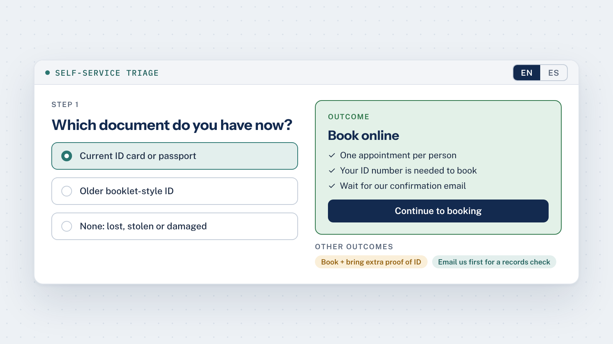
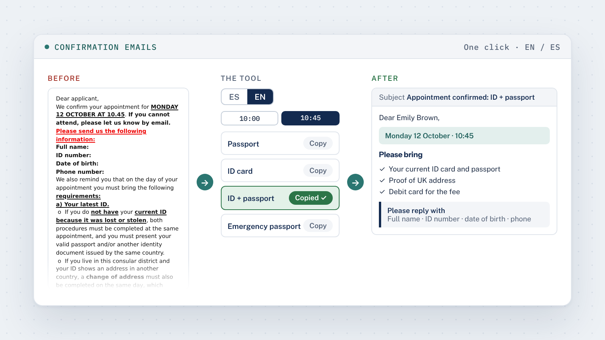
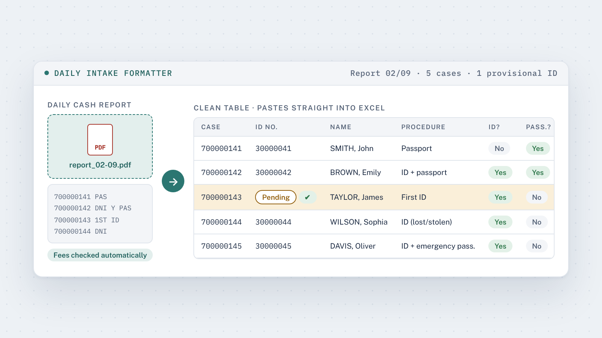
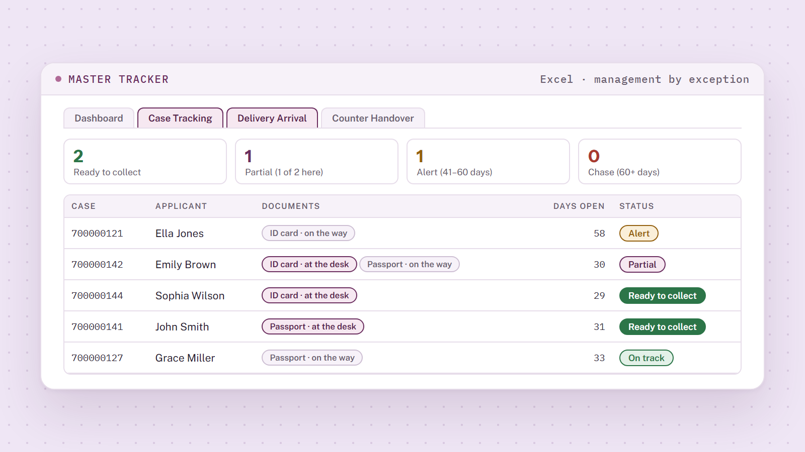
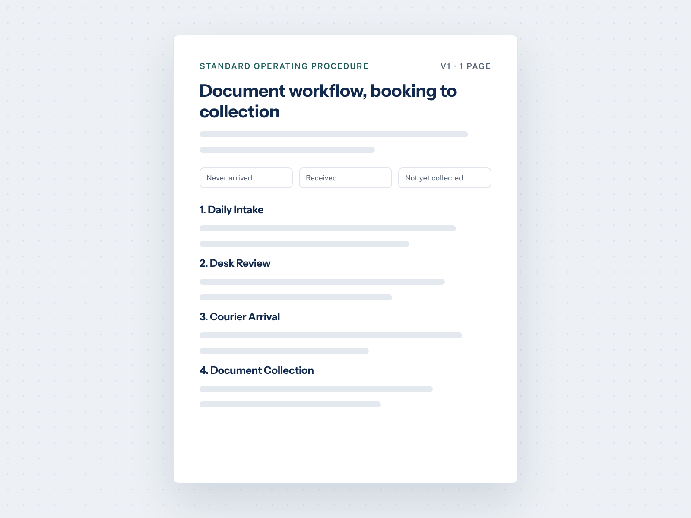

01
Self-Service Triage Tool
A bilingual guide that sends applicants down the right path before they book.
Key resultChecked before they book
View case study
Operations · BizOps & PMO · London
Operations professional with 10+ years of international experience across consular, public sector, legal and facilities roles. Currently leading the Passport Section at the Consulate of Argentina in London.
Work
I spotted where our document workflow was losing time and designed a simpler process. I had to work with the resources already available, so every tool was designed around the office's limits, not the other way round.
I then built it as four connected tools and a one-page SOP, using generative AI. Together they cover every stage of a document's life, from booking to collection.
I walked my colleague through each tool and handed over the SOP to follow step by step. We switched over quickly, and we both use them every day.
How the tools connect

A bilingual guide that sends applicants down the right path before they book.

A clearly formatted confirmation email, ready to paste in one click.

Turns the daily payments report into clean rows for the tracker.

A barcode-scanned workbook that flags delays, so the team tracks cases proactively instead of reacting to enquiries.

A one-page procedure that ties all the tools together.
All names and data in the live demos are fictional.
About
I'm an operations professional with 10+ years of international experience in Argentina, Canada, the USA and the UK, across administrative, customer-facing and process roles.
I currently lead the Passport Section at the Consulate of Argentina in London. The section processes around 130 applications a month: I personally handle 50+ of them, answer 160+ enquiries a month and support 3 Consuls.
What I enjoy most is turning slow, manual work into simple processes a team can rely on. I'm now looking for a Business Operations or PMO role where I can do that full time. I'm also learning SQL to strengthen my data analysis skills.
Contact
Open to Business Operations, BizOps and PMO roles in London.